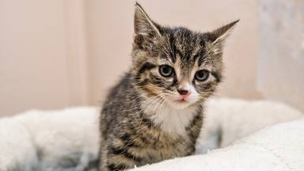
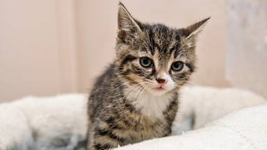

Discos de Metallica
Primer álbum
Segundo álbum
Tercer álbum
Discos de Metallica numerado
Este es un párrafo mediante el cual se incluirá texto a la página
 

Kill'em All
A principios de 1983, el mánager y promotor de conciertos Johnny Zazula (con la ayuda de su mujer) se puso en contacto con el grupo para ofrecerles un traslado a Nueva York, con la idea de organizar varios conciertos en la Costa Este y, si todo marchaba bien, grabar un álbum.7 Tras aceptar la oferta, Metallica inició el viaje el 1 de abril, y tras atravesar todo el país, fijaron su nuevo lugar de residencia en el Music Building de Nueva York, un edificio en el que cohabitaban con varias bandas de rock, entre las que se encontraba Anthrax, iniciando amistad y camaradería entre los dos grupos. A los diez días de su llegada a Nueva York, la situación con Mustaine se hizo insostenible, con lo que Hetfield y Ulrich sorprendieron a un Mustaine recién despierto para anunciarle que estaba fuera del grupo y que en un breve plazo salía el autobús que habían reservado para su vuelta a casa (posteriormente Dave fundaría Megadeth).16 Los integrantes ya estaban preparados para esto. Le pidieron a Zazula que se pusiese en contacto con el guitarrista de Exodus, Kirk Hammett, para unirse a la banda. Al principio, Kirk creía que la llamada de Zazula era una broma, pero finalmente aceptó.15 De forma simultánea a la expulsión de Dave, Kirk Hammett dejaba Exodus y se disponía a salir hacia Nueva York, llegando esa misma noche a altas horas de la madrugada. Alumno de Joe Satriani, Hammett introduciría un sonido más melódico, técnico y estilizado en Metallica, que se haría patente a partir del segundo álbum del grupo, puesto que el primero estaba compuesto en su totalidad en el momento de su entrada. El debut del nuevo guitarrista tendría lugar en el neoyorquino "Showplace" abriendo para The Rods. Tras un mes de ensayos, Metallica entraría finalmente el 10 de mayo en los "Music America Studios" para grabar su primer álbum.7 El tracklisting sería prácticamente igual que el de No Life 'til Leather, incluyendo como novedades el tema "Whiplash", ya aparecido en Live Metal Up Your Ass, y el solo de bajo que Burton solía ejecutar en los conciertos,17 bajo el nombre de "(Anesthesia) Pulling Teeth". Además, también se incluiría una versión remozada del tema "The Mechanix", añadiendo nuevos riffs y rebautizándola como "The Four Horsemen".18 La producción correría a cargo de Paul Curcio, propietario de los estudios e ingeniero residente. Su trabajo levantó suspicacias por parte del grupo debido a la diferencia de criterios con respecto al sonido del álbum que quería imprimirle la banda. Tras seis semanas, el primer trabajo de Metallica sería lanzado en el mes de julio bajo el nombre Kill 'em All. Dicho nombre (Mátalos a Todos) provenía de una frase de Cliff Burton a causa del enfado que produjo en el grupo la negativa de diversas distribuidoras de discos a comercializar el álbum con el título que el grupo quería darle, Metal Up Your Ass (Metal por el culo).11 Zazula, incapaz de encontrar una compañía discográfica interesada en publicar el disco, optó finalmente por la fundación de un sello propio, Megaforce Records. Se consiguió la cifra de 17.000 copias vendidas en las dos primeras semanas,19 y sobre todo, Kill 'em All contribuyó notablemente a extender la buena reputación de Metallica, recibiendo una avalancha de críticas favorables por parte de la prensa, que ya comenzaba a verlos como los iniciadores de una nueva corriente en el metal.20 Posteriormente, la cifra de copias vendidas del disco llegaría hasta las 300.000.21 Como forma de promoción, Zazula organizaría un tour conjunto con Raven, Quiet Riot y Y&T que los llevaría por todo Estados Unidos, constando de 35 fechas y bautizado como Kill 'em All For One Tour (el álbum que Raven se encontraba promocionando se llamaba All For One). Posteriormente, y tras varios conciertos en San Francisco, Nueva York y Boston, y prácticamente coincidiendo con la edición en Europa del sencillo "Jump in the Fire" por parte del sello Music for Nations, el 3 de febrero de 1984 se inició la gira europea Seven Dates of Hell, en la que se encargan de abrir para los ingleses Venom, teniendo como momento cumbre la participación en el Aardshock Festival en Países Bajos, tocando ante más de 5000 personas, la audiencia más grande que habían tenido hasta el momento.15
Ride The Lightning
Terminada la gira, Metallica entraría el 20 de febrero en los Sweet Silence Studios de Copenhague para la grabación de su segundo álbum, recayendo todo el peso de la producción en el ingeniero residente Flemming Rasmussen,7 quien ya había trabajado anteriormente con bandas como Mercyful Fate y Rainbow y posteriormente con Sepultura, Danger Danger y Blind Guardian. El ajustado presupuesto del que Zazula disponía se convirtió en el principal problema durante la grabación del álbum, que transcurrió a un ritmo frenético durante menos de un mes, quedando finalizada el 14 de marzo, y viéndose solo interrumpida por el fallido tour Hell On Earth junto a The Rods y Exciter, finalmente cancelado por la escasa venta de entradas. A la considerable evolución mostrada en estos temas se unía el rumor latente de que el grupo estaba trabajando en una balada, lo que provocó cierta agitación dentro del sector más extremo de los fanáticos de la banda. Ride the Lightning, nombre que recibiría finalmente el álbum, supondría un gran cambio en el sonido de la banda, que se adentraba en terrenos mucho más melódicos. Las labores de composición contaron con la colaboración de Burton y Mustaine. También se confirmó el rumor la inclusión de una balada, que recibiría el título de "Fade to Black". Fue escrita por Hetfield inspirándose en el robo de equipo que la banda sufrió el 14 de enero de aquel mismo año (1984),.22 La primera aparición de la banda en los escenarios tras la grabación tendría lugar en dos sold-out en el londinense Marquee, tras lo cual se harían diversos conciertos en Alemania, Países Bajos y Bélgica. El momento más importante de este tour llegaría el 3 de agosto en el "Roseland" de Nueva York, donde tendrían un primer contacto con el sello Elektra Records, y en el que, tras el concierto, iniciarían las negociaciones con Peter Mensch y Cliff Burnstein de la agencia Q-Prime, la cual finalmente acabaría comprando el contrato de Metallica a Johnny Zazula. Probablemente es este hecho el que fomentaría las conversaciones de la banda con Elektra, que acabaría fichándolos el 12 de septiembre tras firmar un contrato en el que se otorgaba al grupo el control artístico absoluto sobre su carrera. El primer movimiento de Elektra tras reclutar a Metallica sería reeditar Ride the Lightning bajo su sello el 19 de noviembre, a la vez que Music for Nations, con la que Zazula tenía un acuerdo aún vigente tras el fichaje por Elektra, edita en Europa el sencillo "Creeping Death", que contendría la suite The Garage Days Re-visited, formada por las versiones "Am I Evil?" de Diamond Head y "Blitzkrieg" de la banda con el mismo nombre. A su vez, se inicia un nuevo tour europeo, esta vez coordinado por Q-Prime con Robert Allen como mánager de la gira, que dio comienzo en la francesa ciudad de Rusen el 16 de noviembre y finalizó en el London Lyceum de Londres el 20 de diciembre tras haber visitado Francia, Alemania, Dinamarca, Suecia, Suiza, Italia, Finlandia e Inglaterra con un enorme éxito de público. Finalizada la gira europea, y tras un descanso por Navidad, Metallica inició el 11 de enero de 1985 un tour por Estados Unidos y Canadá junto a Armored Saint, Helix y los W.A.S.P. de Blackie Lawless, con quienes la banda tuvo varios roces debido al supuesto ego de dicho frontman. Sería durante esta gira cuando la banda comienza a ser conocida como "Alcohólica" por sus excesos con el alcohol. A esto se uniría el cartel que colocaron en dicho autobús, "No se ría, señor. Su hija probablemente esté dentro", que daba una idea de la actitud desenfadada del grupo. Tras más de tres meses en la carretera, la gira tendría su final en el Starry Night Club de Portland.
Master or Puppets
Pasados dos años de gira, volvieron a los Sweet Silence Studios. De allí surgió Master of Puppets, uno de los discos más alabados dentro del heavy metal,20 la canción principal homónima está considerada por muchos seguidores de la banda como la mejor de Metallica. El disco ha vendido hasta la fecha más de 7 millones de copias en todo el mundo, a pesar de que solo llegó en su día al puesto 29 del Billboard. La gira de presentación del disco comenzó en verano de 1986 con el guitarrista rítmico John Marshall, ya que Hetfield se había quebrado la muñeca en un accidente de skateboard.2425 En dicha gira, esta vez en Europa y con Hetfield recuperado, el autobús de la gira circulaba por las carreteras suecas a las 6:15 horas de la mañana del 27 de septiembre;15 Cliff se encontraba durmiendo en la litera asignada a Kirk Hammett (debido a que este último había perdido en una apuesta), y repentinamente el autobús volcó cerca del pueblo de Ljungby, mientras que Hammett, Ulrich y Hetfield no sufrieron daños físicos preocupantes, el autobús cayó sobre el cuerpo del bajista, tras salir despedido por la ventana, causándole la muerte de forma instantánea. Según el conductor, el autobús derrapó debido a las placas de hielo que había en la carretera, lo que ocasionó el vuelco; Hetfield, furioso por lo sucedido, intentó golpear al conductor, siendo detenido por sus compañeros. Posteriormente recorrió una distancia considerable de la carretera buscando las placas, pero no encontró nada. En el funeral de Burton, se escuchó el tema «Orion». Su muerte provocó la suspensión de la gira de la banda21 y la retirada de los tres miembros restantes para pensar al respecto de su futuro. Finalmente, y después de consultar a los familiares del fallecido bajista,26 decidieron continuar con la carrera musical de la banda, y reclutaron al bajista Jason Newsted de la banda Flotsam and Jetsam, en lugar de Cliff, puesto para el cual también optó Jeff Pilson entre más de 40 músicos.26 Al año siguiente la banda volvería a Europa para completar la gira con su nuevo bajista. En su primera actuación con Metallica, Newsted tocó un solo de bajo, lo que provocó un descontento entre los seguidores de la banda, quienes consideraron esto como una falta de respeto hacia Burton. Pasados dos años de gira, volvieron a los Sweet Silence Studios. De allí surgió Master of Puppets, uno de los discos más alabados dentro del heavy metal,20 la canción principal homónima está considerada por muchos seguidores de la banda como la mejor de Metallica. El disco ha vendido hasta la fecha más de 7 millones de copias en todo el mundo, a pesar de que solo llegó en su día al puesto 29 del Billboard. La gira de presentación del disco comenzó en verano de 1986 con el guitarrista rítmico John Marshall, ya que Hetfield se había quebrado la muñeca en un accidente de skateboard.2425 En dicha gira, esta vez en Europa y con Hetfield recuperado, el autobús de la gira circulaba por las carreteras suecas a las 6:15 horas de la mañana del 27 de septiembre;15 Cliff se encontraba durmiendo en la litera asignada a Kirk Hammett (debido a que este último había perdido en una apuesta), y repentinamente el autobús volcó cerca del pueblo de Ljungby, mientras que Hammett, Ulrich y Hetfield no sufrieron daños físicos preocupantes, el autobús cayó sobre el cuerpo del bajista, tras salir despedido por la ventana, causándole la muerte de forma instantánea. Según el conductor, el autobús derrapó debido a las placas de hielo que había en la carretera, lo que ocasionó el vuelco; Hetfield, furioso por lo sucedido, intentó golpear al conductor, siendo detenido por sus compañeros. Posteriormente recorrió una distancia considerable de la carretera buscando las placas, pero no encontró nada. En el funeral de Burton, se escuchó el tema «Orion». Su muerte provocó la suspensión de la gira de la banda21 y la retirada de los tres miembros restantes para pensar al respecto de su futuro. Finalmente, y después de consultar a los familiares del fallecido bajista,26 decidieron continuar con la carrera musical de la banda, y reclutaron al bajista Jason Newsted de la banda Flotsam and Jetsam, en lugar de Cliff, puesto para el cual también optó Jeff Pilson entre más de 40 músicos.26 Al año siguiente la banda volvería a Europa para completar la gira con su nuevo bajista. En su primera actuación con Metallica, Newsted tocó un solo de bajo, lo que provocó un descontento entre los seguidores de la banda, quienes consideraron esto como una falta de respeto hacia Burton.